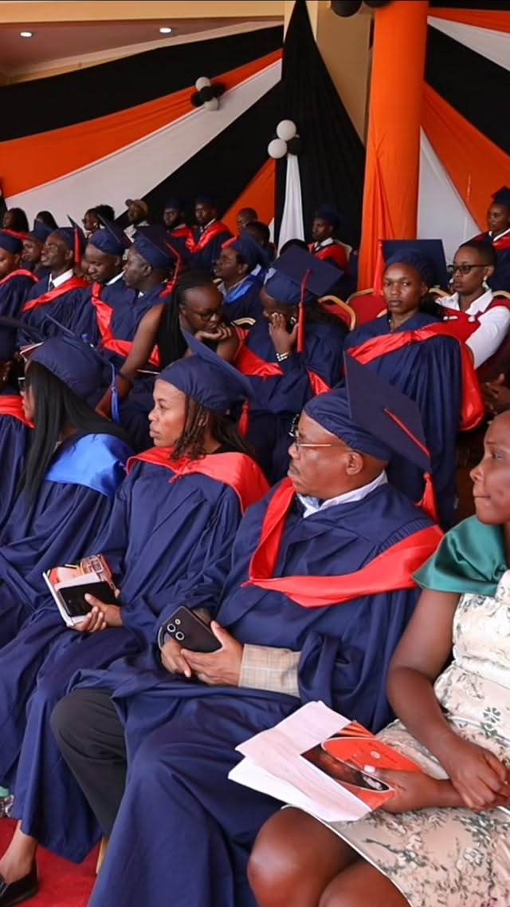

Highest illustrative support

LEARN.
RISE.
BUILD.
RISE.
BUILD.
YOUR AMBITION. OUR SHARED FUTURE.
Your next chapter
starts with education.
Talent is everywhere. Opportunity should be too. Explore a bursary concept designed around students in Kenya’s public universities.
Proposed support from KSh 5,000 to KSh 20,000
01 / EDUCATION OPENS DOORS01 / 03
05Proposed funding bands
20,000 KShMaximum illustrative award
Public universitiesStudents this concept is designed for
Your ambition deserves a future.A FAIRER PATH FORWARD
Your circumstances
shouldn’t define
your ceiling.
Behind every student is a story: a family making sacrifices, a dream taking shape, a community waiting for its next teacher, engineer or entrepreneur.
This concept puts financial need at the centre of university support. Keep learning. Keep showing up. The future you are working towards matters.
Proposed collaboration model
A future verified programme could bring together the Government of Kenya, university councils and HELB. No partnership is confirmed. “Kenya University Board” is not presented here as an established or affiliated organisation.
SUPPORT MATCHED TO NEED
One ambition.
Five funding bands.
Illustrative amounts based on your proposed model. These are not official HELB awards, eligibility rules or funding guarantees.
Enhanced illustrative support
Mid-level illustrative support
Additional illustrative support
Entry illustrative support
Your amount is assigned automatically
Apply bursary ↗The system matches the funding band entered in your application to the proposed bursary amount. You cannot choose an amount.
CLEAR STEPS. LESS UNCERTAINTY.
Your application, made simpler.
Check your fit
Explore the concept for students enrolled at a Kenyan public university.
Tell your story
Select your institution, study year, band and circumstances using sample details.
Review carefully
Check the information and preview an illustrative award before finishing.
Preview review status
See your system-assigned amount and an under-review confirmation preview.

KNOWLEDGE OPENS DOORS
The leaders of tomorrow
are learning today.
FOR THE DREAM YOU HAVEN’T GIVEN UP ON
“Your education can change
your life. Your courage can
change your community.”
Take the next step. Build the future, one semester at a time.
Apply bursary ↗
THE FUTURE STARTS WITH YOU
Learn today.
Lead tomorrow.
Every lesson is a step towards the person your community needs.

TURN KNOWLEDGE INTO POSSIBILITY
Build the skills.
Shape the future.
Great ideas begin with curiosity—and grow through education.

YOUR NEXT CHAPTER
A degree is a milestone.
Your impact is the journey.
Carry your knowledge beyond the classroom. Open doors for others.
BEGIN YOUR NEXT CHAPTER
Try the application.
Use fictional details only. This frontend demonstrates the journey without collecting IDs, bank details, payments or documents.
- Public university enrolment concept
- Amount assigned from your funding band
- Review before demo submission
- No application fee
Your privacy comes first
Drafts are saved on this device only when you choose “Save draft”. Clear your draft when using a shared device.
01 / Student detailsSTEP 1 OF 3
APPLICATION RECEIVED · DEMO
Your application is under review.
System-assigned proposed bursary
This is a preview of the confirmation flow. No application has been transmitted, no review is taking place and no email has been sent. Funding and payment dates require approval.
ANSWERS BEFORE YOU BEGIN
A little clarity
goes a long way.
Is this an official government bursary portal?
No. Elimu Kenya is an independent design prototype. It is not affiliated with the Government of Kenya, HELB or a university council.
Are these the actual HELB band awards?
No. These five amounts are illustrative figures requested for this concept. They are not official loan, scholarship or bursary entitlements.
Can I apply for a real bursary here?
No. This frontend only creates a demo receipt in your browser. Check funding opportunities directly with your university or the relevant official institution.
Do I need to pay or upload documents?
No. This demo requests no fees, ID copies, banking information or uploads.
Where does my saved draft go?
Only into this browser’s local storage when you press Save draft. Clear it using the button beside the application form.